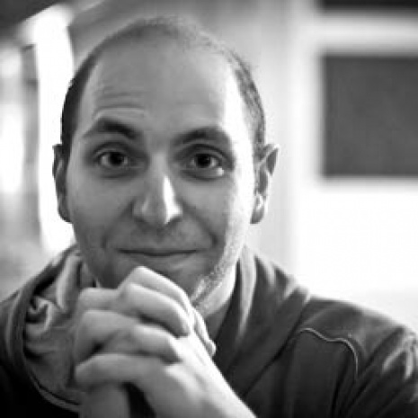
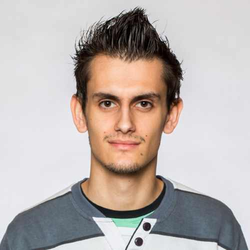
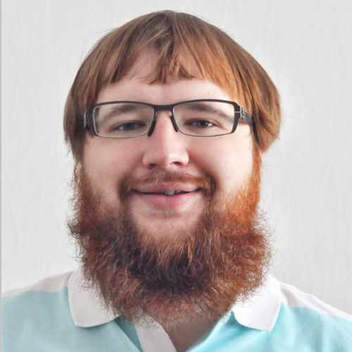
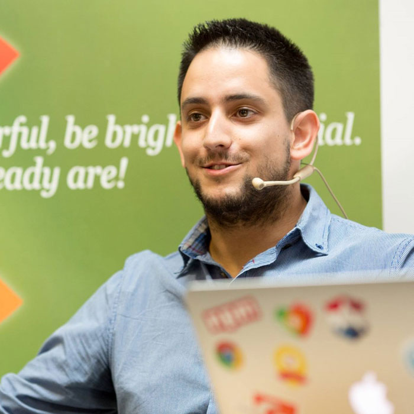
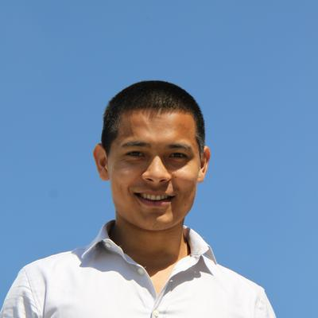
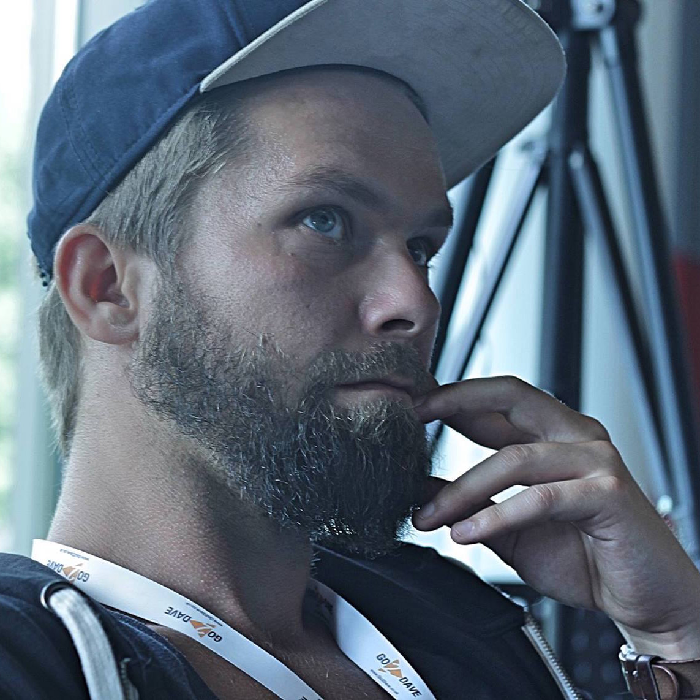

Speakers
Terri Burns @tcburning
San Francisco, USA
Terri Burns is a developer and technologist based in San Francisco. She's
an editorial contributor at Forbes,
where she offers business and leadership advice in the form of data visualizations. In addition to making
visualizations, Terri's cohosted the Forbes podcast Well, Technically, a podcast about startups and
technology.
She's the former-President and current Chair of Tech@NYU, the largest student technology organization in New
York City. She regularly writes about technology, diversity, and inclusion, and her work has been featured in
Forbes, Scientific American, and Model View Culture. Terri's interested in building products, diversifying the
technology industry, and and speaking about technology. She currently works at Twitter as an Associate Product
Manager.

Vitaly Friedman @smashingmag
Freiburg, Germany
Vitaly Friedman loves beautiful content and doesn’t like to give in easily.
Vitaly is writer, speaker, author
and editor-in-chief of Smashing Magazine. He runs responsive Web design workshops, online workshops and loves
solving complex performance problems in large companies.

Gabriel Mičko @gabriel_micko
Budapest, Hungary
Gabriel is working as a Front-end Developer Specialist for DoclerHolding based
in Budapest. Mozilla Tech
Speaker and enthusiastic voluntary at Hungarian Mozilla Community. He is interested in everything related to
web. The world of open source impresses him as well. WebRTC geek, Firefox OS app hacker and devotee of the
platform.

Andrey Listochkin @listochkin
Kiev, Ukraine
Andrey Listochkin is a full-stack web developer from Kiev with over eight years
of experience building large
complex web applications. He's a very active member of Ukrainian development community. He's a co-founder of
dev-ua - the largest chat community for developers in Eastern Europe, - Node.js/iojs Ukrainian localization
working group member, Ukrainian Rust community leader, KyivJS co-organizer and the member of Kottans.org - an
IT
education non-profit. Andrey regularly speaks at conferences in Ukraine and abroad, does training and
workshops
on Ember.js, Node.js, API design, etc., takes part in hackathons and programming competitions, both as a
participant and a mentor.

David Ferreira @daminufe
Amsterdam, the Netherlands
David is a programming enthusiast since 2004, which turned out to become his
professional career. He loves
Javascript language, and for years has been improving his expertise. At the moment David works as a consultant
developer in the Netherlands. Lately, he has been working on a hybrid mobile app for a bank. Also David has
multiple websites in production with full-stack Javascript.

Prashant Palikhe @prashantpalikhe
Amsterdam, the Netherlands
Prashant is a front-end developer who likes to look under the hood of the tools
that he works with everyday.
On
an attempt to understand why the code that he wrote behaved the way it did in the browsers, he came across a
number of tools that the browsers provided which helped him gain clarity on those matters. He believes in
"learning by sharing" which is why he enjoys giving talks on this subject to help others catch up with the
latest and greatest of these browser tools.
Matt Zeunert @mattzeunert
London, UK
Matt is an independent front-end developer based in London. He works on tools
that help developers understand
the code they’re working with. He also blogs about writing readable code. Before focussing on building
developer
tools he worked as a contractor helping different companies make great JavaScript apps.

Stefan Judis @stefanjudis
Berlin, Germany
Stefan started programming 6 years ago and quickly fell in love with web performance, new technologies and
automation.
He worked for several startups in Berlin and recently joined Contentful to to tell the world how an API-first
CMS can make you a bit happier.
He is also a curator of the web performance online resource Perf Tooling (perf-tooling.today), organizer of
the
Web Performance Meetup Berlin, contributes constantly to a variety of open source projects and enjoys sharing
nerdy discoveries.

Call for speakers
If you are interested in speaking please submit a short synopsis to rolling.scopes@gmail.com.
Talk proposals are accepted in Russian, Belarusian and English. The call for speakers will be closed on the
31st
of December.